2023 Advanced Higher Chemistry - Paper 2 questions
Source: Scottish Qualifications Authority (SQA) / Qualifications Scotland. This is a StemInteract HTML companion, not an official HTML edition. Selectable text is supplied alongside original page images. Use the images or original PDF for equations, powers, fractions, vector notation, tables and diagrams; text extraction cannot fully preserve mathematical layout.
Jump to a question
PDF page 1
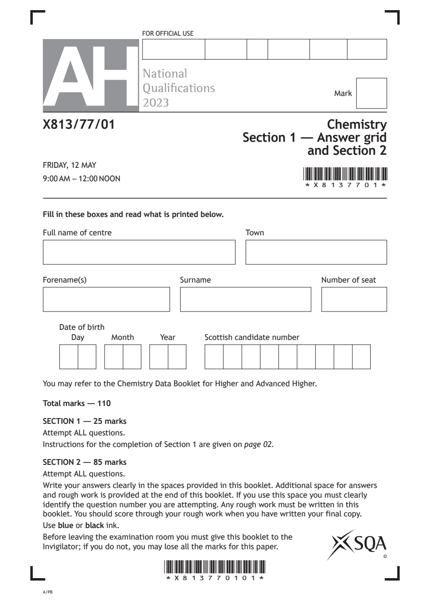
Selectable page text
FOR OFFICIAL USE
AH
National
Qualications
Mark
2023
X813/77/01 Chemistry
Section 1 — Answer grid
and Section 2
FRIDAY, 12 MAY
9:00 AM – 12:00 NOON
*X8137701*
Fill in these boxes and read what is printed below.
Full name of centre Town
Forename(s) Surname Number of seat
Date of birth
Day Month Year Scottish candidate number
You may refer to the Chemistry Data Booklet for Higher and Advanced Higher.
Total marks — 110
SECTION 1 — 25 marks
Attempt ALL questions.
Instructions for the completion of Section 1 are given on page 02.
SECTION 2 — 85 marks
Attempt ALL questions.
Write your answers clearly in the spaces provided in this booklet. Additional space for answers
and rough work is provided at the end of this booklet. If you use this space you must clearly
identify the question number you are attempting. Any rough work must be written in this
booklet. You should score through your rough work when you have written your final copy.
Use blue or black ink.
Before leaving the examination room you must give this booklet to the
Invigilator; if you do not, you may lose all the marks for this paper.
©
*X813770101*
A/PBPDF page 2

Selectable page text
SECTION 1 — 25 marks
The questions for Section 1 are contained in the question paper X813/77/02.
Read these and record your answers on the answer grid on page 03 opposite.
Use blue or black ink. Do NOT use gel pens or pencil.
1. The answer to each question is either A, B, C or D. Decide what your answer is, then fill in
the appropriate bubble (see sample question below).
2. There is only one correct answer to each question.
3. Any rough working should be done on the additional space for answers and rough work at
the end of this booklet.
Sample question
To show that the ink in a ball-pen consists of a mixture of dyes, the method of separation would
be
A fractional distillation
B chromatography
C fractional crystallisation
D filtration.
The correct answer is B — chromatography. The answer B bubble has been clearly filled in (see
below).
A B C D
Changing an answer
If you decide to change your answer, cancel your first answer by putting a cross through it (see
below) and fill in the answer you want. The answer below has been changed to D.
A B C D
If you then decide to change back to an answer you have already scored out, put a tick (✓) to the
right of the answer you want, as shown below:
A B C D A B C D
or
*X813770102*
page 02PDF page 3

Selectable page text
SECTION 1 — Answer grid
*OBJ25AD1*
A B C D
1
2
3
4
5
6
7
8
9
10
11
12
13
14
15
16
17
18
19
20
21
22
23
24
25
*X813770103*
page 03 [Turn overPDF page 4

Selectable page text
[BLANK PAGE]
DO NOT WRITE ON THIS PAGE
*X813770104*
page 04PDF page 5
Paper 2, Question 1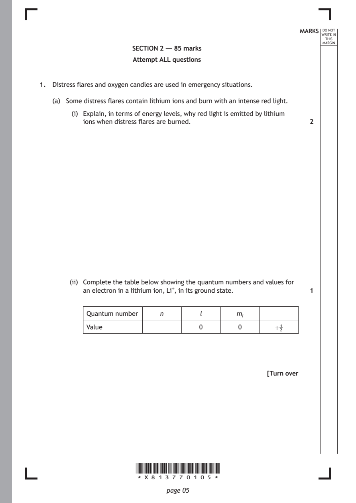
Selectable page text
MARKS _{W}^{D}_{R}^{O}_{I} _{T}^{N}OT
E IN
THIS
MARGIN
SECTION 2 — 85 marks
Attempt ALL questions
1. Distress flares and oxygen candles are used in emergency situations.
(a) Some distress flares contain lithium ions and burn with an intense red light.
(i) Explain, in terms of energy levels, why red light is emitted by lithium
ions when distress flares are burned. 2
(ii) Complete the table below showing the quantum numbers and values for
an electron in a lithium ion, Li⁺, in its ground state. 1
Quantum number n l mₗ
Value 0 0 + 1
2
[Turn over
*X813770105*
page 05PDF page 6
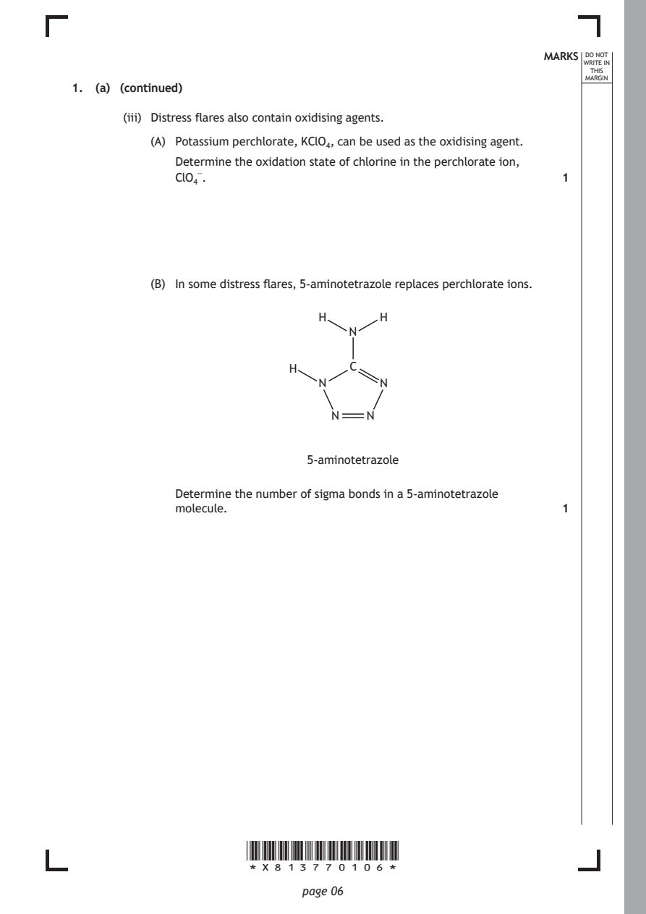
Selectable page text
MARKS _{W}^{D}_{R}^{O}_{I} _{T}^{N}OT
E IN
THIS
MARGIN
1. (a) (continued)
(iii) Distress flares also contain oxidising agents.
(A) Potassium perchlorate, KClO₄, can be used as the oxidising agent.
Determine the oxidation state of chlorine in the perchlorate ion,
ClO₄⁻. 1
(B) In some distress flares, 5-aminotetrazole replaces perchlorate ions.
H H
N
H C
N N
N N
5-aminotetrazole
Determine the number of sigma bonds in a 5-aminotetrazole
molecule. 1
*X813770106*
page 06PDF page 7
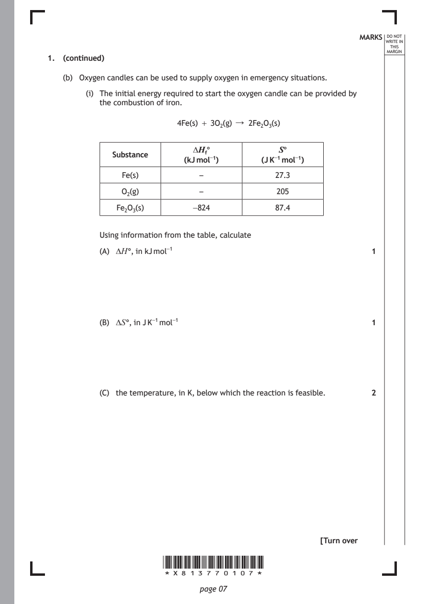
Selectable page text
MARKS _{W}^{D}_{R}^{O}_{I} _{T}^{N}OT
E IN
THIS
MARGIN
1. (continued)
(b) Oxygen candles can be used to supply oxygen in emergency situations.
(i) The initial energy required to start the oxygen candle can be provided by
the combustion of iron.
4Fe(s) + 3O₂(g) ↓ 2Fe₂O₃(s)
ΔH_{f}° S°
Substance
(kJ mol⁻¹) (J K⁻¹ mol⁻¹)
Fe(s) – 27.3
O₂(g) – 205
Fe₂O₃(s) −824 87.4
Using information from the table, calculate
(A) ΔH °, in kJ mol⁻¹ 1
(B) ΔS °, in J K⁻¹ mol⁻¹ 1
(C) the temperature, in K, below which the reaction is feasible. 2
[Turn over
*X813770107*
page 07PDF page 8
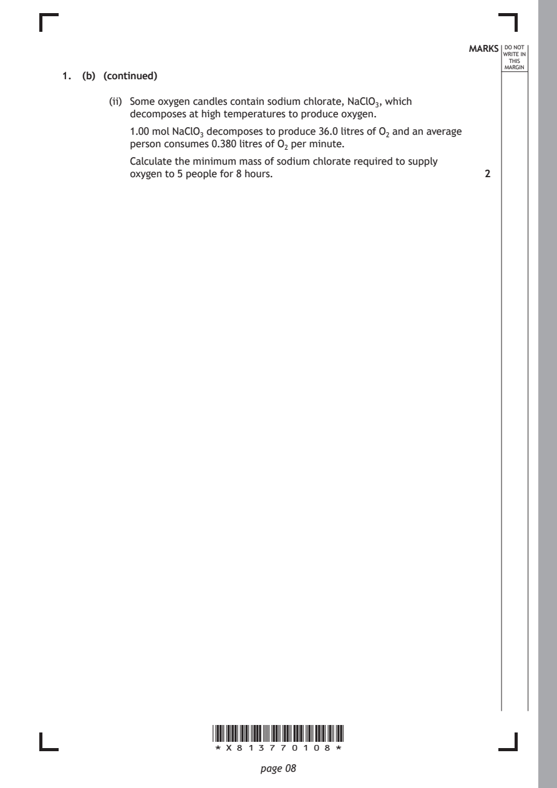
Selectable page text
MARKS _{W}^{D}_{R}^{O}_{I} _{T}^{N}OT
E IN
THIS
MARGIN
1. (b) (continued)
(ii) Some oxygen candles contain sodium chlorate, NaClO₃, which
decomposes at high temperatures to produce oxygen.
1.00 mol NaClO₃ decomposes to produce 36.0 litres of O₂ and an average
person consumes 0.380 litres of O₂ per minute.
Calculate the minimum mass of sodium chlorate required to supply
oxygen to 5 people for 8 hours. 2
*X813770108*
page 08PDF page 9
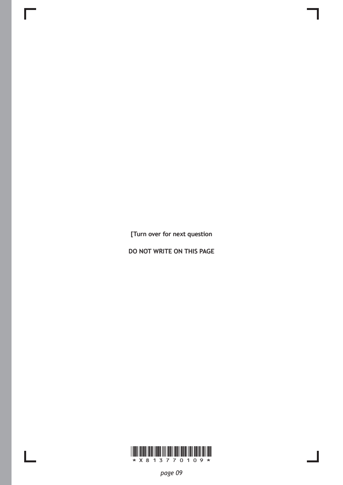
Selectable page text
[Turn over for next question
DO NOT WRITE ON THIS PAGE
*X813770109*
page 09PDF page 10
Paper 2, Question 2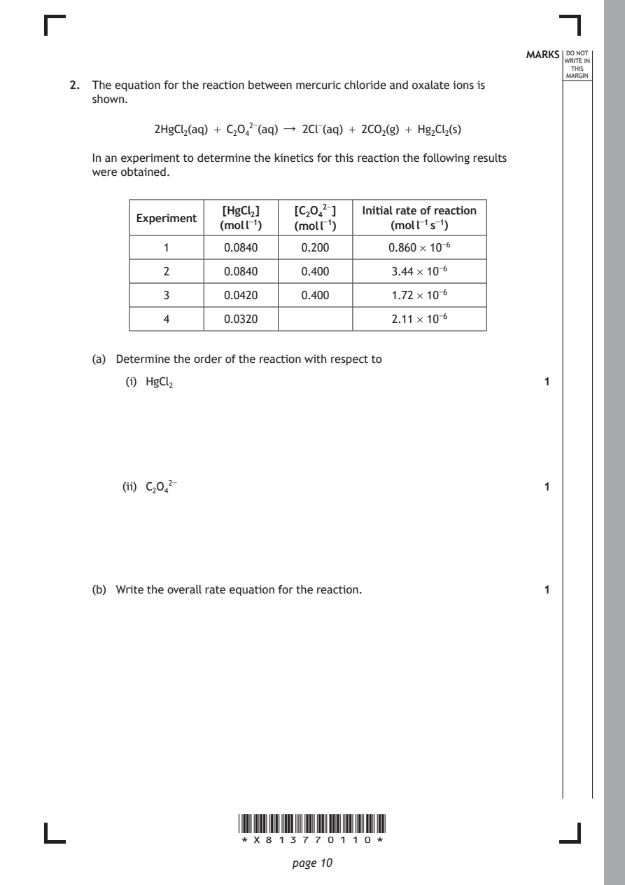
Selectable page text
MARKS _{W}^{D}_{R}^{O}_{I} _{T}^{N}OT
E IN
THIS
MARGIN
2. The equation for the reaction between mercuric chloride and oxalate ions is
shown.
2HgCl₂(aq) + C₂O₄²⁻(aq) ↓ 2Cl⁻(aq) + 2CO₂(g) + Hg₂Cl₂(s)
In an experiment to determine the kinetics for this reaction the following results
were obtained.
[HgCl₂] [C₂O₄²⁻] Initial rate of reaction
Experiment
(mol l⁻¹) (mol l⁻¹) (mol l⁻¹ s⁻¹)
1 0.0840 0.200 0.860 × 10⁻⁶
2 0.0840 0.400 3.44 × 10⁻⁶
3 0.0420 0.400 1.72 × 10⁻⁶
4 0.0320 2.11 × 10⁻⁶
(a) Determine the order of the reaction with respect to
(i) HgCl₂ 1
(ii) C₂O₄²⁻ 1
(b) Write the overall rate equation for the reaction. 1
*X813770110*
page 10PDF page 11
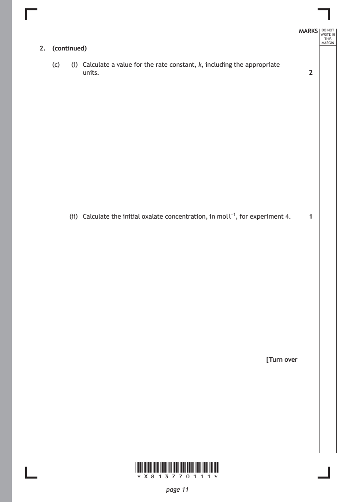
Selectable page text
MARKS _{W}^{D}_{R}^{O}_{I} _{T}^{N}OT
E IN
THIS
MARGIN
2. (continued)
(c) (i) Calculate a value for the rate constant, k, including the appropriate
units. 2
(ii) Calculate the initial oxalate concentration, in mol l⁻¹, for experiment 4. 1
[Turn over
*X813770111*
page 11PDF page 12
Paper 2, Question 3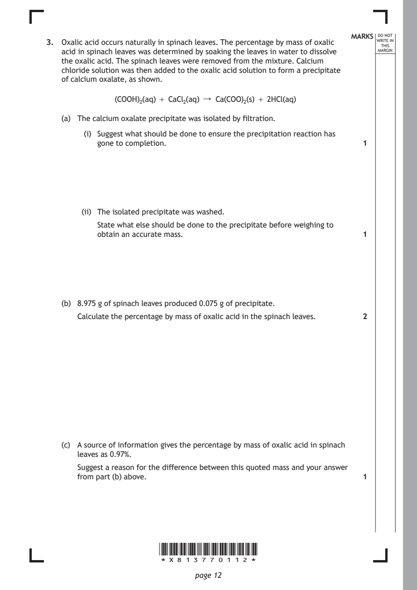
Selectable page text
MARKS _{W}^{D}_{R}^{O}_{I} _{T}^{N}OT
3. Oxalic acid occurs naturally in spinach leaves. The percentage by mass of oxalic E IN
THIS
acid in spinach leaves was determined by soaking the leaves in water to dissolve MARGIN
the oxalic acid. The spinach leaves were removed from the mixture. Calcium
chloride solution was then added to the oxalic acid solution to form a precipitate
of calcium oxalate, as shown.
(COOH)₂(aq) + CaCl₂(aq) ↓ Ca(COO)₂(s) + 2HCl(aq)
(a) The calcium oxalate precipitate was isolated by filtration.
(i) Suggest what should be done to ensure the precipitation reaction has
gone to completion. 1
(ii) The isolated precipitate was washed.
State what else should be done to the precipitate before weighing to
obtain an accurate mass. 1
(b) 8.975 g of spinach leaves produced 0.075 g of precipitate.
Calculate the percentage by mass of oxalic acid in the spinach leaves. 2
(c) A source of information gives the percentage by mass of oxalic acid in spinach
leaves as 0.97%.
Suggest a reason for the difference between this quoted mass and your answer
from part (b) above. 1
*X813770112*
page 12PDF page 13
Paper 2, Question 4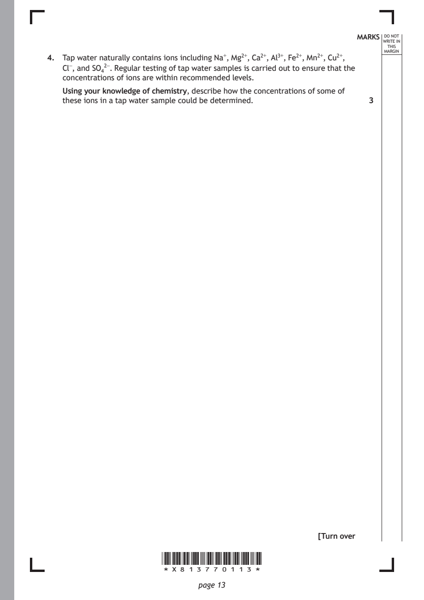
Selectable page text
MARKS _{W}^{D}_{R}^{O}_{I} _{T}^{N}OT
E IN
THIS
MARGIN
4. Tap water naturally contains ions including Na⁺, Mg²⁺, Ca²⁺, Al³⁺, Fe²⁺, Mn²⁺, Cu²⁺,
Cl⁻, and SO₄²⁻. Regular testing of tap water samples is carried out to ensure that the
concentrations of ions are within recommended levels.
Using your knowledge of chemistry, describe how the concentrations of some of
these ions in a tap water sample could be determined. 3
[Turn over
*X813770113*
page 13PDF page 14
Paper 2, Question 5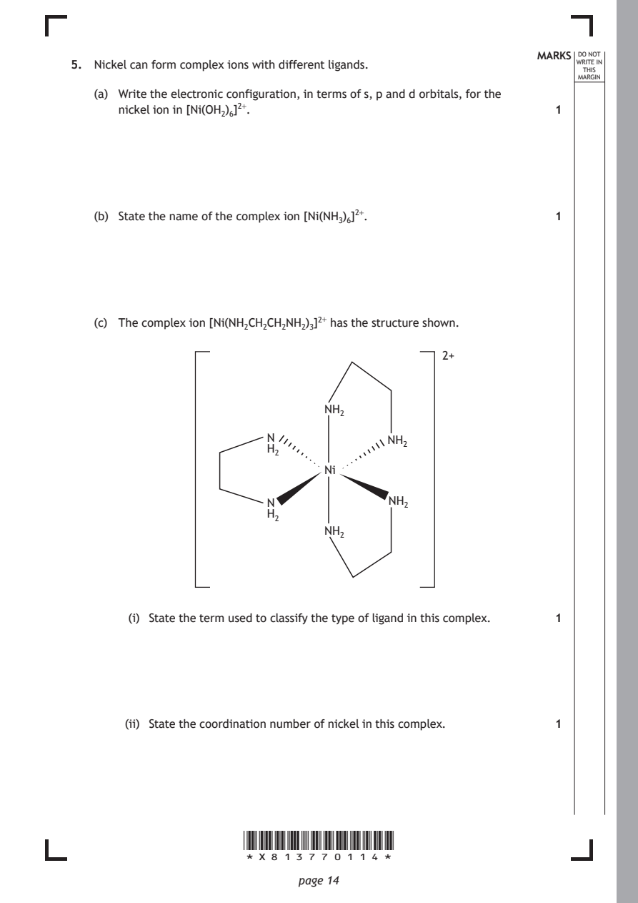
Selectable page text
MARKS _{W}^{D}_{R}^{O}_{I} _{T}^{N}OT
5. Nickel can form complex ions with different ligands. E IN
THIS
MARGIN
(a) Write the electronic configuration, in terms of s, p and d orbitals, for the
nickel ion in [Ni(OH₂)₆]²+. 1
(b) State the name of the complex ion [Ni(NH₃)₆]²+. 1
(c) The complex ion [Ni(NH₂CH₂CH₂NH₂)₃]²+ has the structure shown.
2+
NH₂
N NH₂
H₂
Ni
N NH₂
H₂
NH₂
(i) State the term used to classify the type of ligand in this complex. 1
(ii) State the coordination number of nickel in this complex. 1
*X813770114*
page 14PDF page 15
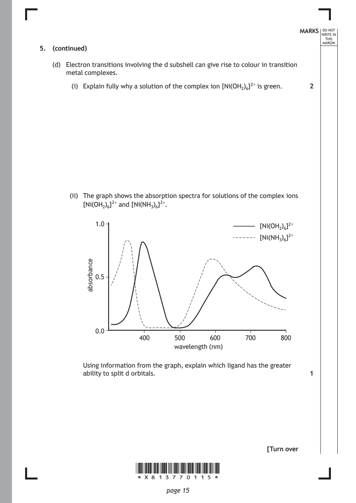
Selectable page text
MARKS _{W}^{D}_{R}^{O}_{I} _{T}^{N}OT
E IN
THIS
MARGIN
5. (continued)
(d) Electron transitions involving the d subshell can give rise to colour in transition
metal complexes.
(i) Explain fully why a solution of the complex ion [Ni(OH₂)₆]²+ is green.
(ii) The graph shows the absorption spectra for solutions of the complex ions
[Ni(OH₂)₆]²+ and [Ni(NH₃)₆]²+.
*X813770115*
page 15
ecnabrosba
2
1.0 [Ni(OH₂)₆]²+
[Ni(NH₃)₆]²+
0.5
0.0
400 500 600 700 800
wavelength (nm)
Using information from the graph, explain which ligand has the greater
ability to split d orbitals. 1
[Turn overPDF page 16
Paper 2, Question 6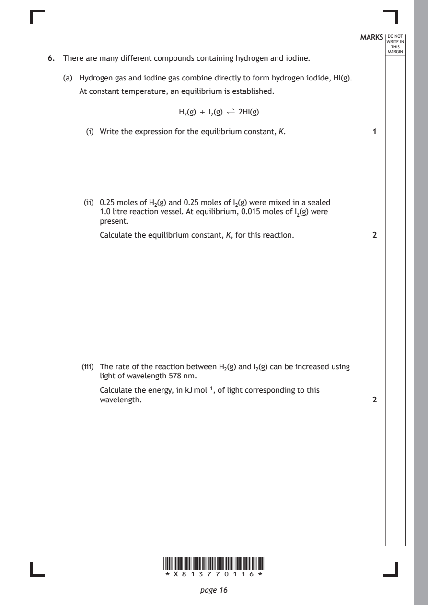
Selectable page text
MARKS _{W}^{D}_{R}^{O}_{I} _{T}^{N}OT
E IN
THIS
MARGIN
6. There are many different compounds containing hydrogen and iodine.
(a) Hydrogen gas and iodine gas combine directly to form hydrogen iodide, HI(g).
At constant temperature, an equilibrium is established.
H₂(g) + I₂(g) Ý 2HI(g)
(i) Write the expression for the equilibrium constant, K. 1
(ii) 0.25 moles of H₂(g) and 0.25 moles of I₂(g) were mixed in a sealed
1.0 litre reaction vessel. At equilibrium, 0.015 moles of I₂(g) were
present.
Calculate the equilibrium constant, K, for this reaction. 2
(iii) The rate of the reaction between H₂(g) and I₂(g) can be increased using
light of wavelength 578 nm.
Calculate the energy, in kJ mol⁻¹, of light corresponding to this
wavelength. 2
*X813770116*
page 16PDF page 17
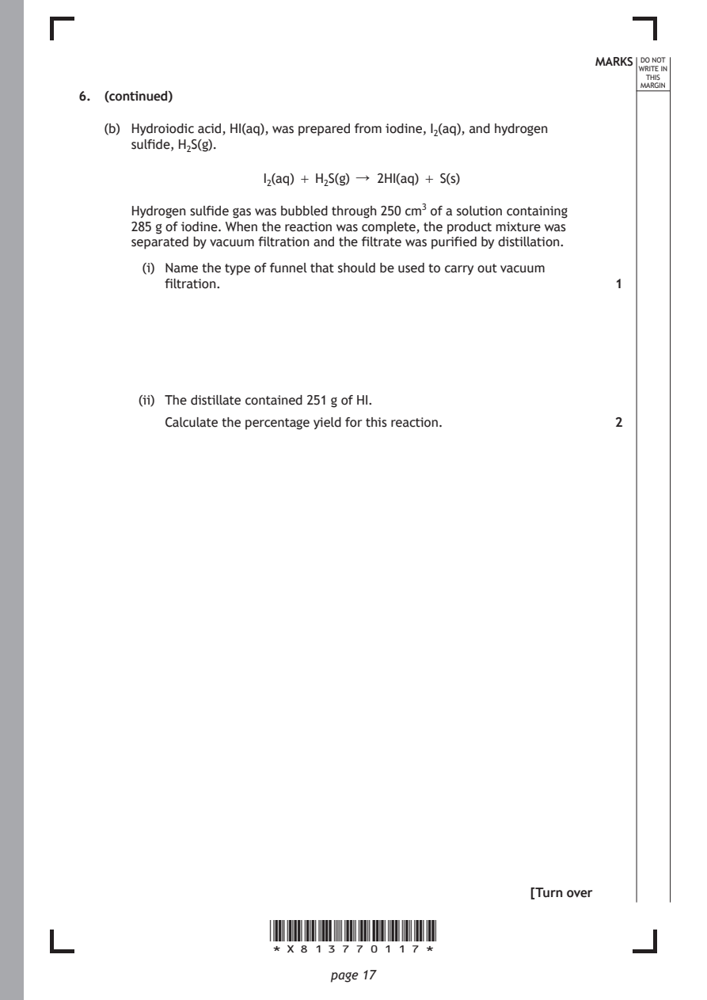
Selectable page text
MARKS _{W}^{D}_{R}^{O}_{I} _{T}^{N}OT
E IN
THIS
MARGIN
6. (continued)
(b) Hydroiodic acid, HI(aq), was prepared from iodine, I₂(aq), and hydrogen
sulfide, H₂S(g).
I₂(aq) + H₂S(g) ↓ 2HI(aq) + S(s)
Hydrogen sulfide gas was bubbled through 250 cm³ of a solution containing
285 g of iodine. When the reaction was complete, the product mixture was
separated by vacuum filtration and the filtrate was purified by distillation.
(i) Name the type of funnel that should be used to carry out vacuum
filtration. 1
(ii) The distillate contained 251 g of HI.
Calculate the percentage yield for this reaction. 2
[Turn over
*X813770117*
page 17PDF page 18
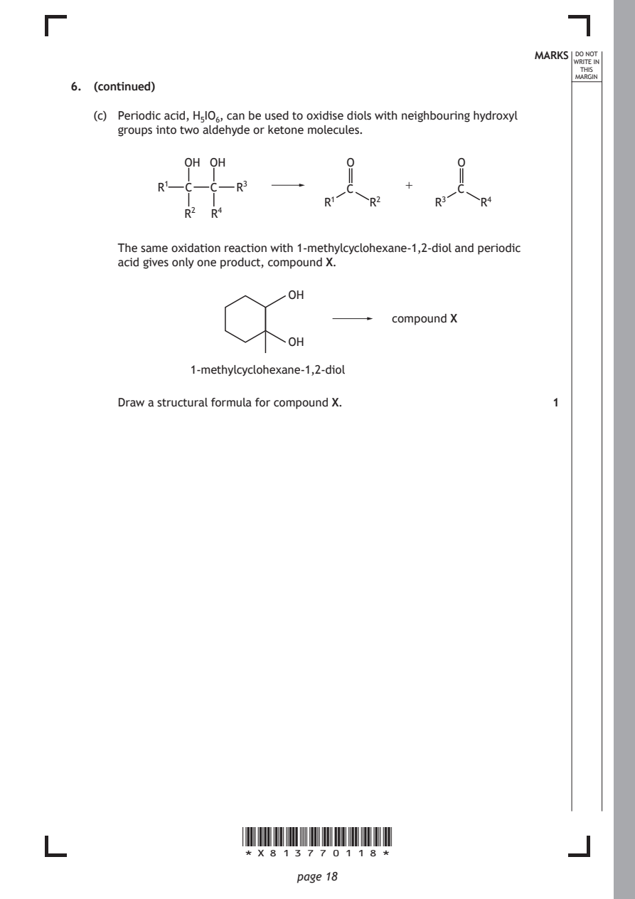
Selectable page text
MARKS _{W}^{D}_{R}^{O}_{I} _{T}^{N}OT
E IN
THIS
MARGIN
6. (continued)
(c) Periodic acid, H₅IO₆, can be used to oxidise diols with neighbouring hydroxyl
groups into two aldehyde or ketone molecules.
OH OH O O
+
R¹ C C R³ C C
R¹ R² R³ R⁴
R² R⁴
The same oxidation reaction with 1-methylcyclohexane-1,2-diol and periodic
acid gives only one product, compound X.
OH
compound X
OH
1-methylcyclohexane-1,2-diol
Draw a structural formula for compound X. 1
*X813770118*
page 18PDF page 19
Paper 2, Question 7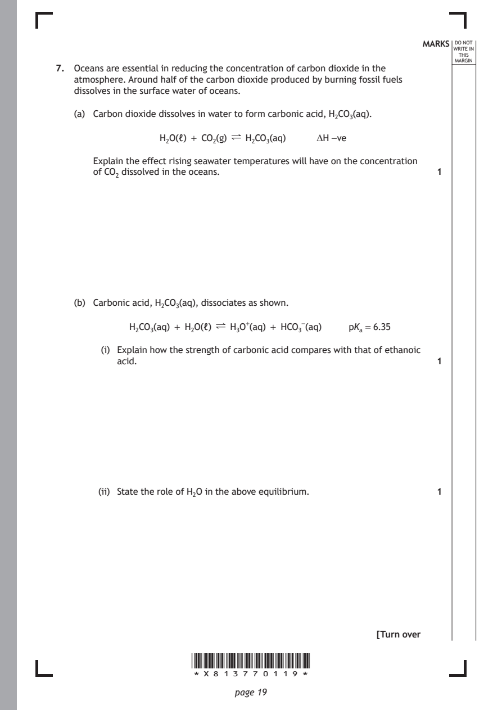
Selectable page text
MARKS _{W}^{D}_{R}^{O}_{I} _{T}^{N}OT
E IN
THIS
MARGIN
7. Oceans are essential in reducing the concentration of carbon dioxide in the
atmosphere. Around half of the carbon dioxide produced by burning fossil fuels
dissolves in the surface water of oceans.
(a) Carbon dioxide dissolves in water to form carbonic acid, H₂CO₃(aq).
H₂O(ℓ) + CO₂(g) Ý H₂CO₃(aq) ΔH −ve
Explain the effect rising seawater temperatures will have on the concentration
of CO₂ dissolved in the oceans. 1
(b) Carbonic acid, H₂CO₃(aq), dissociates as shown.
H₂CO₃(aq) + H₂O(ℓ) Ý H₃O⁺(aq) + HCO₃⁻(aq) pKₐ = 6.35
(i) Explain how the strength of carbonic acid compares with that of ethanoic
acid. 1
(ii) State the role of H₂O in the above equilibrium. 1
[Turn over
*X813770119*
page 19PDF page 20
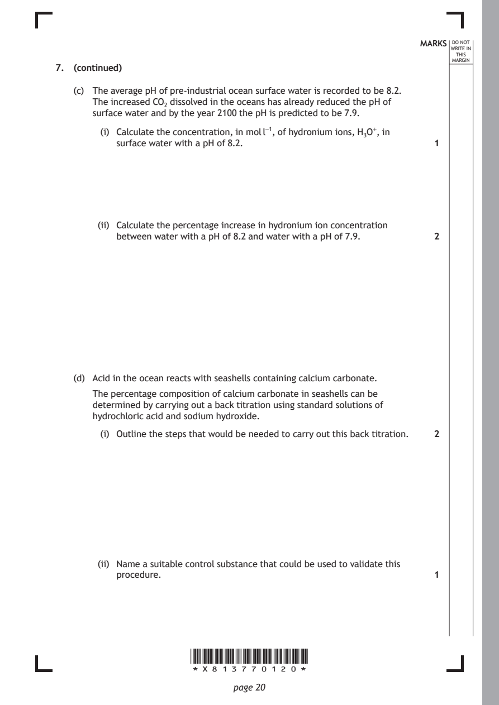
Selectable page text
MARKS _{W}^{D}_{R}^{O}_{I} _{T}^{N}OT
E IN
THIS
MARGIN
7. (continued)
(c) The average pH of pre-industrial ocean surface water is recorded to be 8.2.
The increased CO₂ dissolved in the oceans has already reduced the pH of
surface water and by the year 2100 the pH is predicted to be 7.9.
(i) Calculate the concentration, in mol l⁻¹, of hydronium ions, H₃O⁺, in
surface water with a pH of 8.2. 1
(ii) Calculate the percentage increase in hydronium ion concentration
between water with a pH of 8.2 and water with a pH of 7.9. 2
(d) Acid in the ocean reacts with seashells containing calcium carbonate.
The percentage composition of calcium carbonate in seashells can be
determined by carrying out a back titration using standard solutions of
hydrochloric acid and sodium hydroxide.
(i) Outline the steps that would be needed to carry out this back titration. 2
(ii) Name a suitable control substance that could be used to validate this
procedure. 1
*X813770120*
page 20PDF page 21
Paper 2, Question 8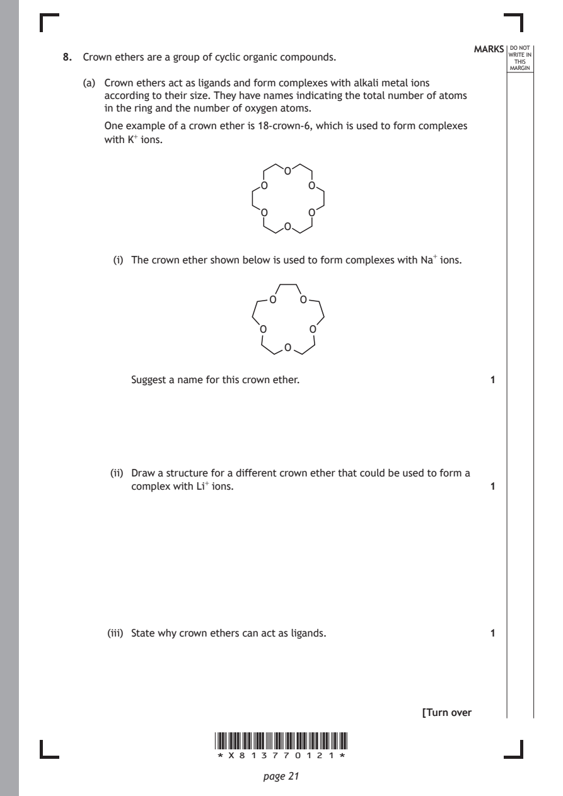
Selectable page text
MARKS _{W}^{D}_{R}^{O}_{I} _{T}^{N}OT
8. Crown ethers are a group of cyclic organic compounds. E IN
THIS
MARGIN
(a) Crown ethers act as ligands and form complexes with alkali metal ions
according to their size. They have names indicating the total number of atoms
in the ring and the number of oxygen atoms.
One example of a crown ether is 18-crown-6, which is used to form complexes
with K⁺ ions.
O
O O
O O
O
(i) The crown ether shown below is used to form complexes with Na⁺ ions.
O O
O O
O
Suggest a name for this crown ether. 1
(ii) Draw a structure for a different crown ether that could be used to form a
complex with Li⁺ ions. 1
(iii) State why crown ethers can act as ligands. 1
[Turn over
*X813770121*
page 21PDF page 22
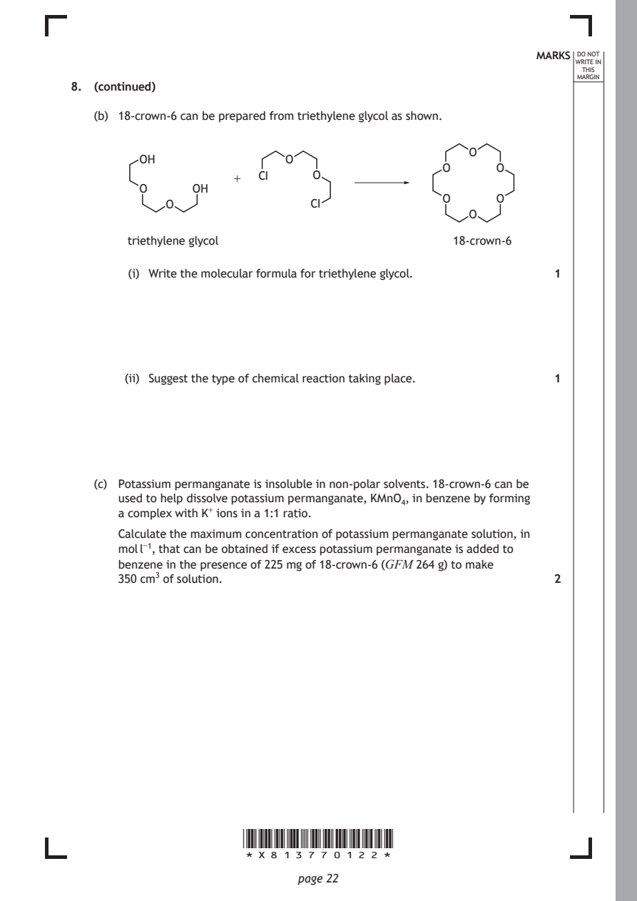
Selectable page text
MARKS _{W}^{D}_{R}^{O}_{I} _{T}^{N}OT
E IN
THIS
MARGIN
8. (continued)
(b) 18-crown-6 can be prepared from triethylene glycol as shown.
O
OH O
O O
+ CI O
O OH
O O
O CI
O
triethylene glycol 18-crown-6
(i) Write the molecular formula for triethylene glycol. 1
(ii) Suggest the type of chemical reaction taking place. 1
(c) Potassium permanganate is insoluble in non-polar solvents. 18-crown-6 can be
used to help dissolve potassium permanganate, KMnO₄, in benzene by forming
a complex with K⁺ ions in a 1:1 ratio.
Calculate the maximum concentration of potassium permanganate solution, in
mol l⁻¹, that can be obtained if excess potassium permanganate is added to
benzene in the presence of 225 mg of 18-crown-6 (GFM 264 g) to make
350 cm³ of solution. 2
*X813770122*
page 22PDF page 23
Paper 2, Question 9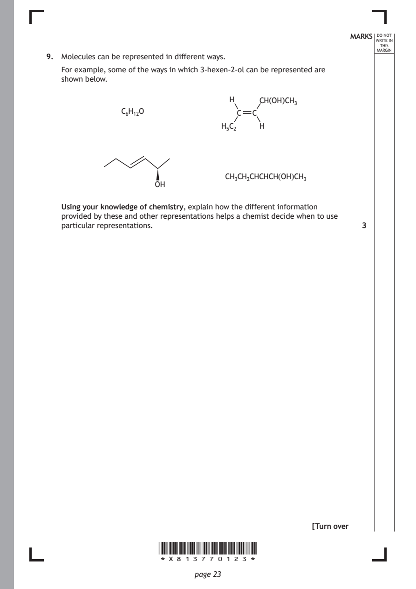
Selectable page text
MARKS _{W}^{D}_{R}^{O}_{I} _{T}^{N}OT
E IN
THIS
MARGIN
9. Molecules can be represented in different ways.
For example, some of the ways in which 3-hexen-2-ol can be represented are
shown below.
H CH(OH)CH₃
C₆H₁₂O C C
H₅C₂ H
CH₃CH₂CHCHCH(OH)CH₃
OH
Using your knowledge of chemistry, explain how the different information
provided by these and other representations helps a chemist decide when to use
particular representations. 3
[Turn over
*X813770123*
page 23PDF page 24
Paper 2, Question 10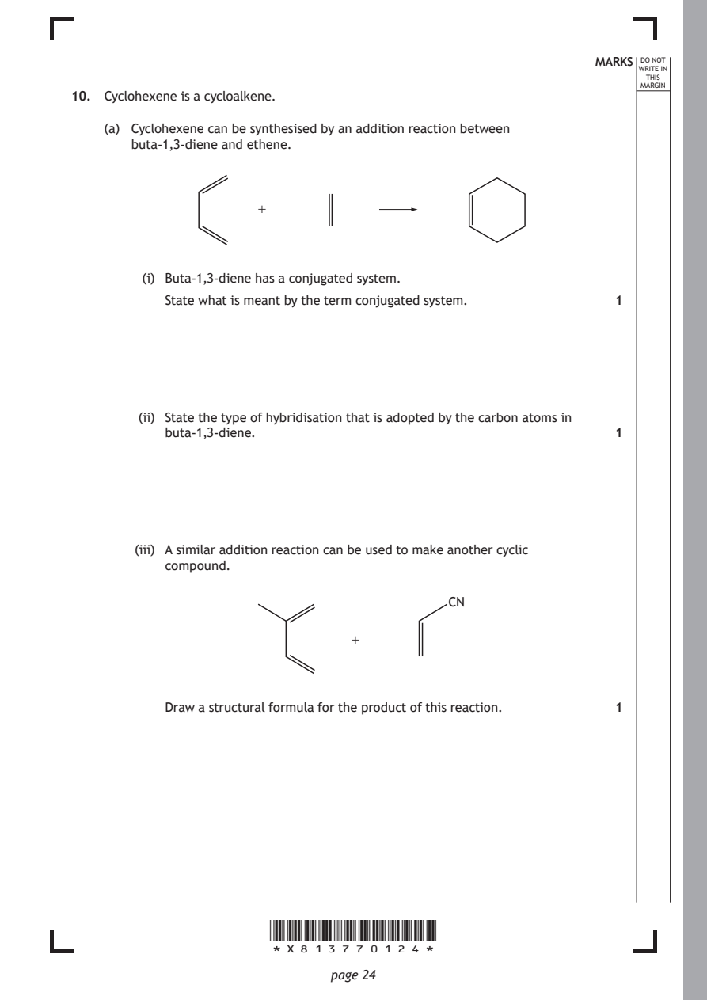
Selectable page text
MARKS _{W}^{D}_{R}^{O}_{I} _{T}^{N}OT
E IN
THIS
MARGIN
10. Cyclohexene is a cycloalkene.
(a) Cyclohexene can be synthesised by an addition reaction between
buta-1,3-diene and ethene.
+
(i) Buta-1,3-diene has a conjugated system.
State what is meant by the term conjugated system. 1
(ii) State the type of hybridisation that is adopted by the carbon atoms in
buta-1,3-diene. 1
(iii) A similar addition reaction can be used to make another cyclic
compound.
CN
+
Draw a structural formula for the product of this reaction. 1
*X813770124*
page 24PDF page 25
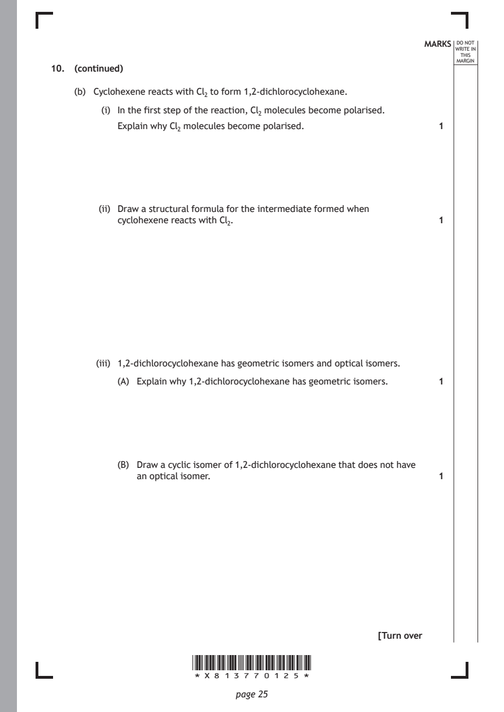
Selectable page text
MARKS _{W}^{D}_{R}^{O}_{I} _{T}^{N}OT
E IN
THIS
MARGIN
10. (continued)
(b) Cyclohexene reacts with Cl₂ to form 1,2-dichlorocyclohexane.
(i) In the first step of the reaction, Cl₂ molecules become polarised.
Explain why Cl₂ molecules become polarised. 1
(ii) Draw a structural formula for the intermediate formed when
cyclohexene reacts with Cl₂. 1
(iii) 1,2-dichlorocyclohexane has geometric isomers and optical isomers.
(A) Explain why 1,2-dichlorocyclohexane has geometric isomers. 1
(B) Draw a cyclic isomer of 1,2-dichlorocyclohexane that does not have
an optical isomer. 1
[Turn over
*X813770125*
page 25PDF page 26
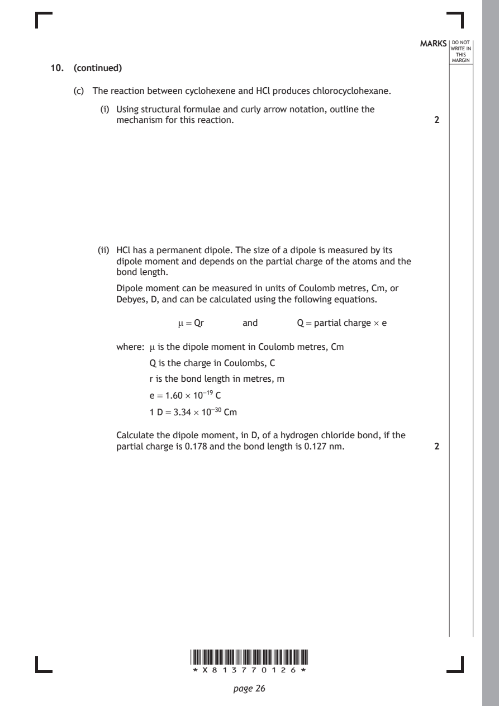
Selectable page text
MARKS _{W}^{D}_{R}^{O}_{I} _{T}^{N}OT
E IN
THIS
MARGIN
10. (continued)
(c) The reaction between cyclohexene and HCl produces chlorocyclohexane.
(i) Using structural formulae and curly arrow notation, outline the
mechanism for this reaction. 2
(ii) HCl has a permanent dipole. The size of a dipole is measured by its
dipole moment and depends on the partial charge of the atoms and the
bond length.
Dipole moment can be measured in units of Coulomb metres, Cm, or
Debyes, D, and can be calculated using the following equations.
μ = Qr and Q = partial charge × e
where: μ is the dipole moment in Coulomb metres, Cm
Q is the charge in Coulombs, C
r is the bond length in metres, m
e = 1.60 × 10⁻¹⁹ C
1 D = 3.34 × 10⁻³⁰ Cm
Calculate the dipole moment, in D, of a hydrogen chloride bond, if the
partial charge is 0.178 and the bond length is 0.127 nm. 2
*X813770126*
page 26PDF page 27
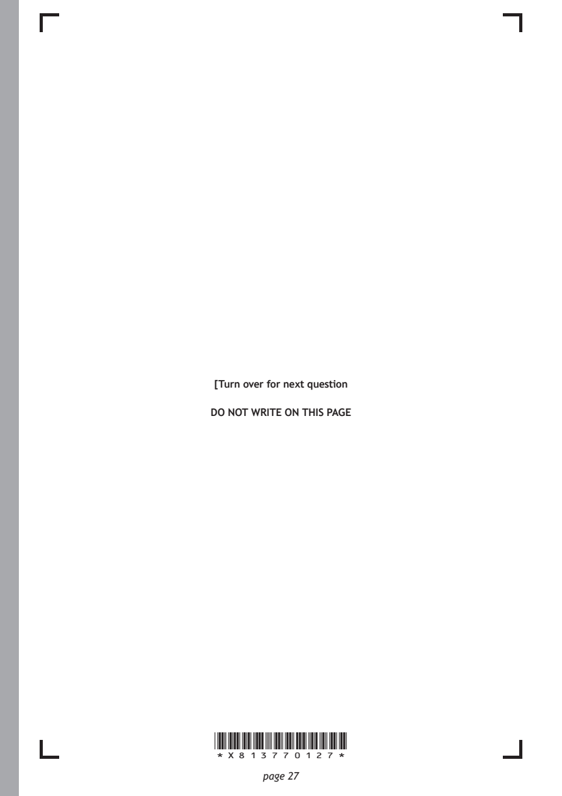
Selectable page text
[Turn over for next question
DO NOT WRITE ON THIS PAGE
*X813770127*
page 27PDF page 28
Paper 2, Question 11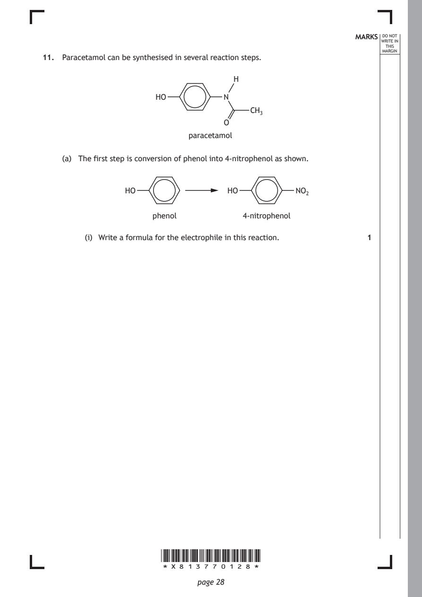
Selectable page text
MARKS _{W}^{D}_{R}^{O}_{I} _{T}^{N}OT
E IN
THIS
MARGIN
11. Paracetamol can be synthesised in several reaction steps.
H
HO N
CH₃
O
paracetamol
(a) The first step is conversion of phenol into 4-nitrophenol as shown.
HO HO NO₂
phenol 4-nitrophenol
(i) Write a formula for the electrophile in this reaction. 1
*X813770128*
page 28PDF page 29
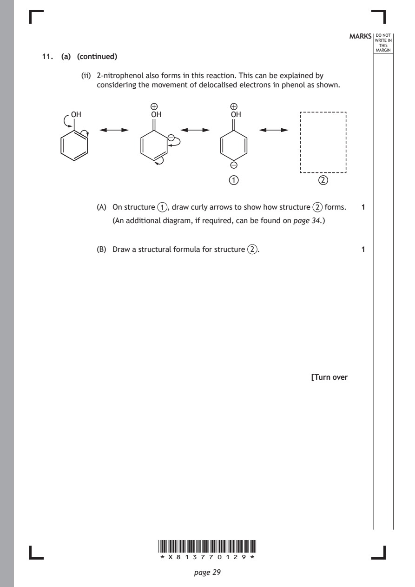
Selectable page text
MARKS _{W}^{D}_{R}^{O}_{I} _{T}^{N}OT
E IN
THIS
MARGIN
11. (a) (continued)
(ii) 2-nitrophenol also forms in this reaction. This can be explained by
considering the movement of delocalised electrons in phenol as shown.
+ +
OH OH OH
−
−
1 2
(A) On structure 1 , draw curly arrows to show how structure 2 forms. 1
(An additional diagram, if required, can be found on page 34.)
(B) Draw a structural formula for structure 2 . 1
[Turn over
*X813770129*
page 29PDF page 30
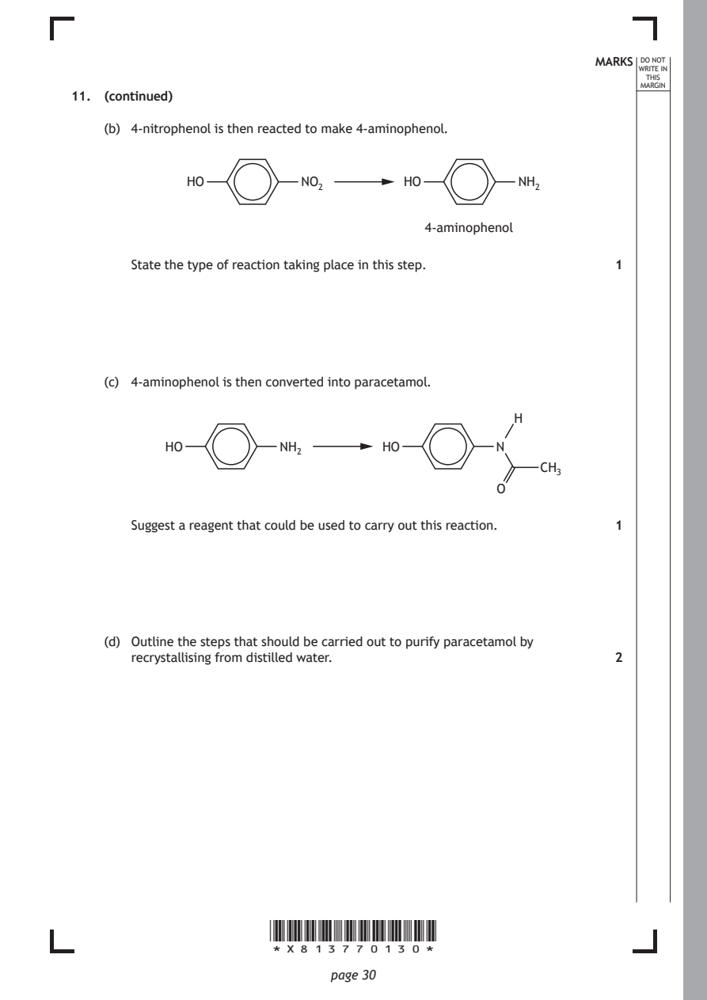
Selectable page text
MARKS _{W}^{D}_{R}^{O}_{I} _{T}^{N}OT
E IN
THIS
MARGIN
11. (continued)
(b) 4-nitrophenol is then reacted to make 4-aminophenol.
HO NO₂ HO NH₂
4-aminophenol
State the type of reaction taking place in this step. 1
(c) 4-aminophenol is then converted into paracetamol.
H
HO NH₂ HO N
CH₃
O
Suggest a reagent that could be used to carry out this reaction. 1
(d) Outline the steps that should be carried out to purify paracetamol by
recrystallising from distilled water. 2
*X813770130*
page 30PDF page 31
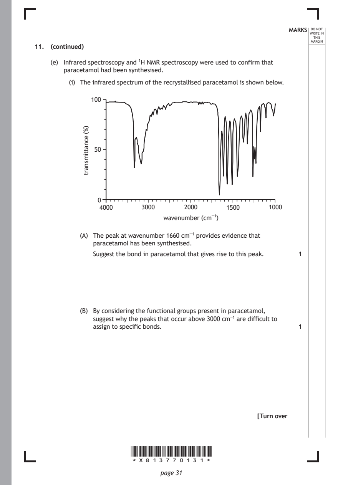
Selectable page text
MARKS _{W}^{D}_{R}^{O}_{I} _{T}^{N}OT
E IN
THIS
MARGIN
11. (continued)
(e) Infrared spectroscopy and ¹H NMR spectroscopy were used to confirm that
paracetamol had been synthesised.
(i) The infrared spectrum of the recrystallised paracetamol is shown below.
*X813770131*
page 31
)%(
ecnattimsnart
100
50
0
4000 3000 2000 1500 1000
wavenumber (cm⁻¹)
(A) The peak at wavenumber 1660 cm⁻¹ provides evidence that
paracetamol has been synthesised.
Suggest the bond in paracetamol that gives rise to this peak. 1
(B) By considering the functional groups present in paracetamol,
suggest why the peaks that occur above 3000 cm⁻¹ are difficult to
assign to specific bonds. 1
[Turn overPDF page 32
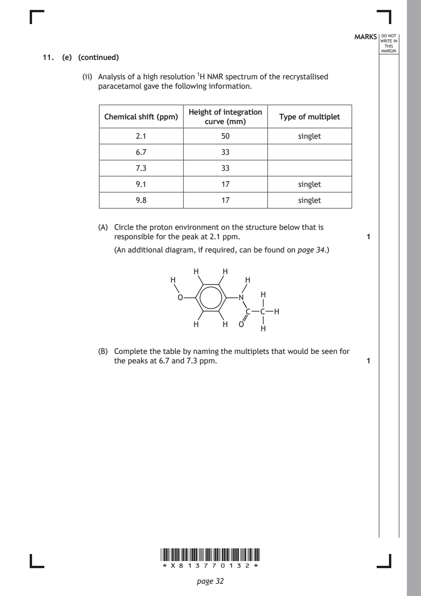
Selectable page text
MARKS _{W}^{D}_{R}^{O}_{I} _{T}^{N}OT
E IN
THIS
MARGIN
11. (e) (continued)
(ii) Analysis of a high resolution ¹H NMR spectrum of the recrystallised
paracetamol gave the following information.
Height of integration
Chemical shift (ppm) Type of multiplet
curve (mm)
2.1 50 singlet
6.7 33
7.3 33
9.1 17 singlet
9.8 17 singlet
(A) Circle the proton environment on the structure below that is
responsible for the peak at 2.1 ppm.
(An additional diagram, if required, can be found on page 34.)
H H
H
H
O N
C C H
H H O
H
*X813770132*
page 32
H
1
(B) Complete the table by naming the multiplets that would be seen for
the peaks at 6.7 and 7.3 ppm. 1PDF page 33
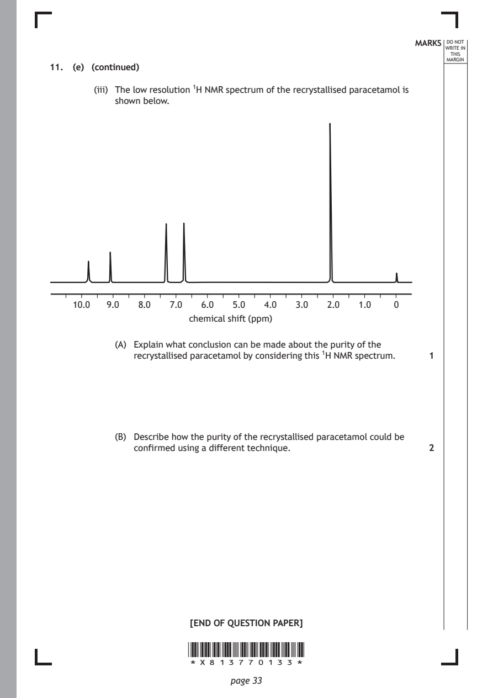
Selectable page text
MARKS _{W}^{D}_{R}^{O}_{I} _{T}^{N}OT
E IN
THIS
MARGIN
11. (e) (continued)
(iii) The low resolution ¹H NMR spectrum of the recrystallised paracetamol is
shown below.
10.0 9.0 8.0 7.0 6.0 5.0 4.0 3.0 2.0 1.0 0
chemical shift (ppm)
(A) Explain what conclusion can be made about the purity of the
recrystallised paracetamol by considering this ¹H NMR spectrum. 1
(B) Describe how the purity of the recrystallised paracetamol could be
confirmed using a different technique. 2
[END OF QUESTION PAPER]
*X813770133*
page 33PDF page 34
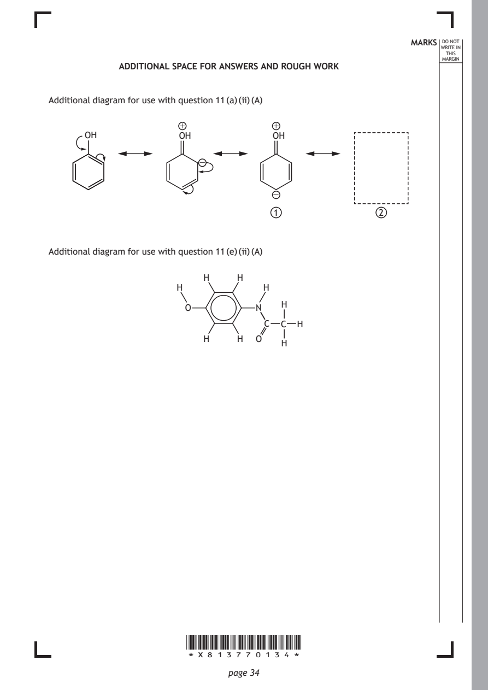
Selectable page text
MARKS _{W}^{D}_{R}^{O}_{I} _{T}^{N}OT
E IN
THIS
MARGIN
ADDITIONAL SPACE FOR ANSWERS AND ROUGH WORK
Additional diagram for use with question 11 (a) (ii) (A)
+ +
OH OH OH
−
−
1 2
Additional diagram for use with question 11 (e) (ii) (A)
H H
H
H
O N
C C H
H H O
H
*X813770134*
page 34
HPDF page 35
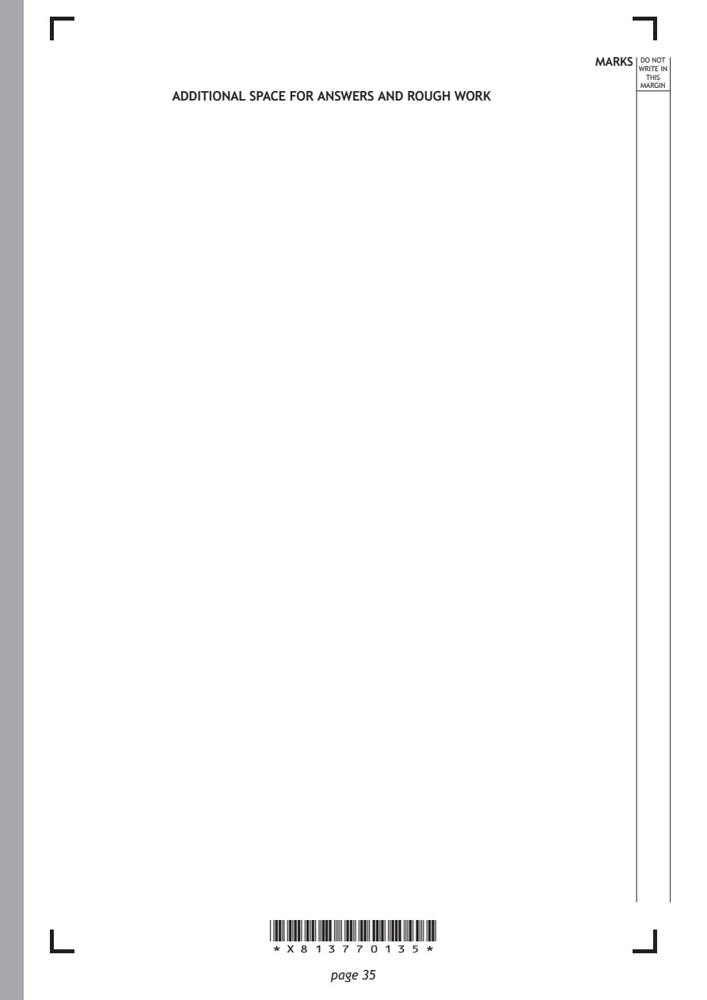
Selectable page text
MARKS _{W}^{D}_{R}^{O}_{I} _{T}^{N}OT
E IN
THIS
MARGIN
ADDITIONAL SPACE FOR ANSWERS AND ROUGH WORK
*X813770135*
page 35PDF page 36

Selectable page text
MARKS _{W}^{D}_{R}^{O}_{I} _{T}^{N}OT
E IN
THIS
MARGIN
ADDITIONAL SPACE FOR ANSWERS AND ROUGH WORK
*X813770136*
page 36PDF page 37

Selectable page text
MARKS _{W}^{D}_{R}^{O}_{I} _{T}^{N}OT
E IN
THIS
MARGIN
ADDITIONAL SPACE FOR ANSWERS AND ROUGH WORK
*X813770137*
page 37PDF page 38

Selectable page text
[BLANK PAGE]
DO NOT WRITE ON THIS PAGE
*X813770138*
page 38PDF page 39
Selectable page text
[BLANK PAGE]
DO NOT WRITE ON THIS PAGE
*X813770139*
page 39PDF page 40

Selectable page text
[BLANK PAGE]
DO NOT WRITE ON THIS PAGE
*X813770140*
page 40